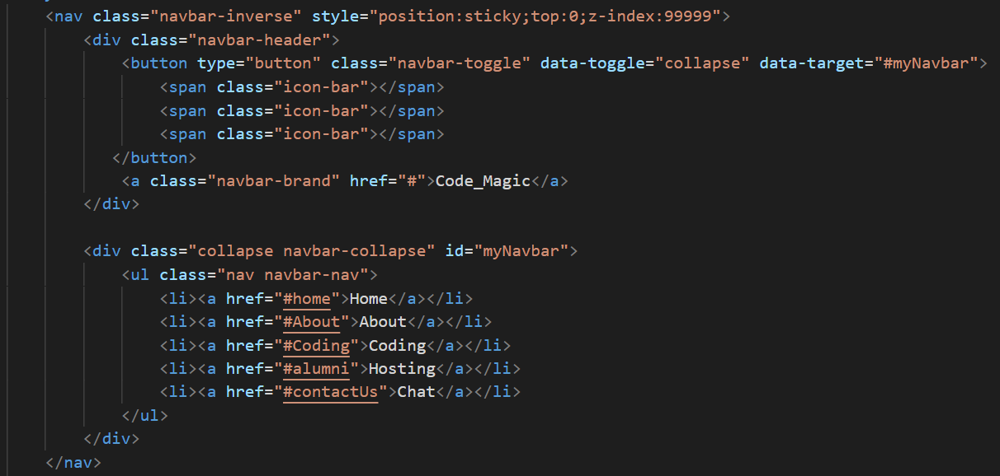

In this you are going to learn how to make a navbar and host it on Github
About
Visual Studio Code is a source-code editor made by Microsoft for Windows, Linux and macOS. Features include support for debugging, syntax highlighting, intelligent code completion, snippets, code refactoring, and embedded Git. And Github.... GitHub, Inc. is a provider of Internet hosting for software development and version control using Git. It offers the distributed version control and source code management functionality of Git, plus its own features.
Coding
How to make a navbar
Code used:

Hosting
Open github and create an account on it and then go to the Repositories section and click the new button and then give a good name to it.... click on create a repository and click on upload existing file and choose the appropriate files then click on commit changes. Go to settings and then to pages and change none to main and click save... Then go to your account and and open the repositry again go to settings and then to pages then you will have a link click on it and it is public in the whole world....